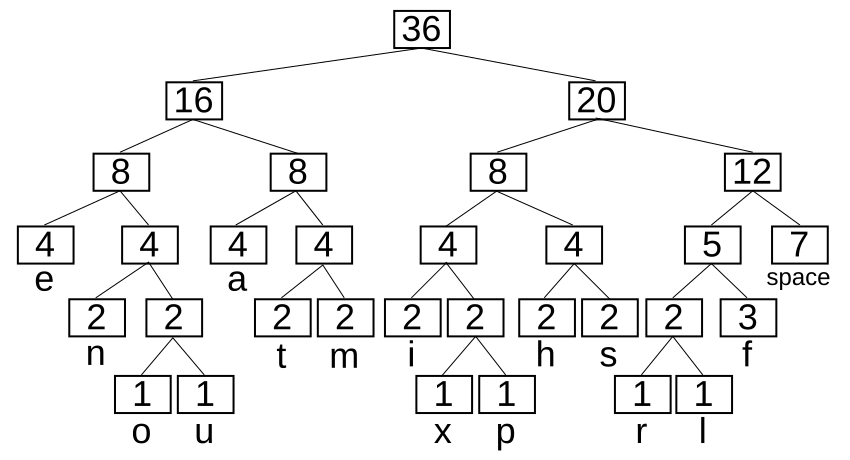
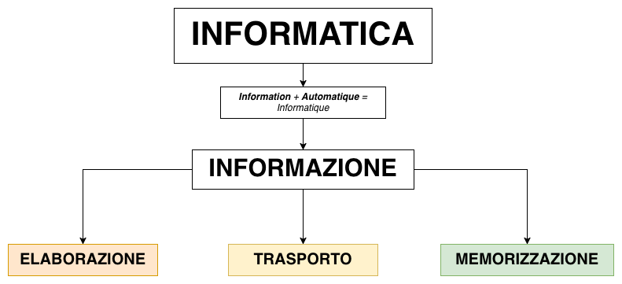

Dcoetzee, Public domain, da Wikimedia Commons{kind=link}
La codifica di Huffman
A cura di Nicholas Magi — nicholas.magi[at]ispascalcomandini.it
Versione stampabile (qualche formattazione potrebbe andare perduta)

Algoritmi di Compressione
In quale ambito ricadono tra elaborazione, trasporto e memorizzazione?
Compressione dei dati
La compressione dei dati, in informatica e nelle telecomunicazioni, è la tecnica di elaborazione dati che, attuata a mezzo di opportuni algoritmi, permette la riduzione della quantità di bit necessari alla rappresentazione in forma digitale di un’informazione.
Due grandi categorie
Compressione lossy
- Comporta una perdita irreversibile di parte dell’informazione (spesso inosservabile all’occhio umano).
- Algoritmi più efficienti in termini di spazio risparmiato.
Ci deve essere un buon trade-off tra la quantità di informazione persa e l’integrità del contenuto.
Compressione lossless
- Mantiene intatta l’informazione associata ai dati.
- Algoritmi che “riorganizzano” i dati per occupare meno spazio — garantendo la ricostruzione del contenuto originale al 100%.
Compressione lossy
Ci deve essere un buon trade-off tra la quantità di informazione persa e l’integrità del contenuto.
Un esempio $\downarrow$

Tanto spazio risparmiato, ma il soggetto era irriconoscibile.
Standard che usano compressione lossy
- MP3 (Audio)
- …
- MPEG-4 (Video)
- …
- JPEG (Immagini)
- …
Compressione lossless
Utilizzata per contenuti in cui non è accettabile una perdita di informazione (file di testo o un programma, per esempio).
Problema
Gli algoritmi di compressione lossless non possono sempre garantire che ogni insieme di dati in input diminuisca di dimensione.
Buona e semplice dimostrazione matematica su Wikipedia.
Alcuni esempi di algoritmi di compressione lossless:
- Codifica di Huffman $\quad (\leftarrow$ noi approfondiamo questa!$)$
- Codifica (o compressione) aritmetica
- Lempel-Ziv-Welch (LZW)
- Deflate (combinazione di LZW e Huffman)
- …
| FORMATO/PROGRAMMA | AMBITO | ALGORITMO |
|---|---|---|
| GIF | Immagini | LZW |
| PNG | Immagini | Deflate |
| GZip | Archivio ZIP | Deflate |
| WinRar | Archivio ZIP | Algoritmo proprio |
| … | … | … |
David Huffman, 1925 - 1999
Codifica di Huffman
Varie codifiche lossless
Fixed-length coding
Codifica che mappa ciascun carattere ad un codice corrispondente di lunghezza prefissata (ex. ASCII).
Variable-length coding
I caratteri codificati possono avere lunghezze diverse.
associare un codice più corto ai caratteri più frequenti, e più lungo a quelli meno.
L’algoritmo
1class HuffmanEncoder
2{
3 /// <summary>
4 /// Funzione di Encoding che, preso in input il contenuto di un file di testo,
5 /// mi restituisce una stringa contenente la rispettiva codifica secondo
6 /// l'algoritmo di Huffman
7 /// </summary>
8 /// <param name="content">Contenuto da codificare</param>
9 /// <returns>Il contenuto `content` codificato.</returns>
10 public static string Encode(string content)
11 {
12 // 1) Calcolo la tabella delle frequenze di ciascun carattere
13 var frequencyTable = BuildFrequencyTable(content);
14 // 2) Costruisco l'albero di Huffman a partire da quelle frequenze
15 var huffmanTree = BuildHuffmanTree(frequencyTable);
16 // 3) Calcolo i codici per ciascun carattere
17 var codes = CalculateHuffmanCodes(huffmanTree);
18
19 // 4) Dati i codici appena calcolati, completare la codifica!
20 return HuffmanEncode(content, codes);
21 }
22}
Gli step
| STEP | CONSEGNA |
|---|---|
| (1) Costruzione tabella delle frequenze dei caratteri | char-frequency.md |
| (2) Costruzione dell’albero di Huffman (richiede di avere una PQ — possibilmente basata su MinHeap) | build-huffman-tree.md |
| (3) Calcolo dei codici per ciascun carattere | huffman-tree-traversal.md |
| (4) Codifica del testo in input | huffman-encode.md |